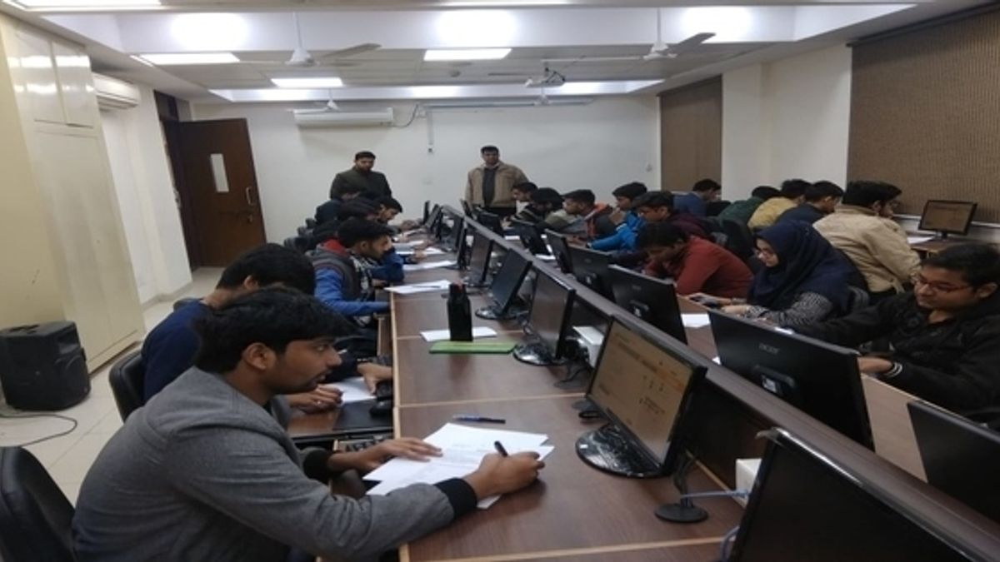

Admission Process at Surya Educational Institutions
Engineering and Medical Programs
Surya Educational Institutions offer a wide range of undergraduate and postgraduate programs in engineering and medical fields. Admission to these programs is highly competitive and follows a rigorous selection process:

Undergraduate Admissions
To secure admission to our undergraduate programs in engineering and medical disciplines, prospective students must:
- Successfully complete their secondary education (e.g., high school) with outstanding academic performance.
- Appear for relevant entrance examinations, such as engineering entrance exams or medical entrance exams, and achieve competitive scores.
- Participate in a comprehensive counseling process that considers academic achievements, test scores, and personal interviews.
- Submit required documents, including academic transcripts, recommendation letters, and a personal statement.
Postgraduate Admissions
For postgraduate programs in engineering and medical fields, applicants should:
- Hold a relevant bachelor's degree with a strong academic record.
- Clear the required entrance exams for their chosen specialization.
- Participate in interviews or assessments specific to their field of study.
- Submit academic transcripts, letters of recommendation, and a statement of purpose.
Encouragement of Sports and Fine Arts
At Surya Educational Institutions, we believe in nurturing well-rounded individuals who excel not only academically but also in sports and fine arts. Our admission process for sports and fine arts programs is inclusive and supportive:

Sports Scholarships
We offer scholarships to talented athletes who demonstrate exceptional skills in various sports disciplines:
- Prospective sports scholars are evaluated based on their sports achievements, performance records, and potential for further development.
- Applicants may need to provide videos or attend tryout sessions to showcase their abilities.
- Selected sports scholars benefit from financial support and dedicated training facilities.
Fine Arts and Cultural Programs
Our institution welcomes students with a passion for fine arts and cultural pursuits:
- Applicants interested in fine arts, music, dance, or other cultural fields are encouraged to submit portfolios or audition videos showcasing their talents.
- A review committee assesses these submissions and selects candidates who exhibit exceptional artistic potential.
- Admitted students have access to specialized training, artistic mentorship, and opportunities to showcase their talents.
We are committed to fostering a diverse and inclusive community of learners, where academic excellence, sportsmanship, and artistic creativity flourish. Our admission process reflects this commitment, ensuring that students with varied interests and talents find their place at Surya Educational Institutions.